Loading...
Ethno-complex menu
Food Menu
Most Popular Items

Rice Porrige 115s
Rice porridge with milk is one of the favorite dishes of children. Porridge cooked in a slow cooker is very tender and creamy.
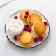
Cheesecakes in the oven 115s
Cheesecakes according to this recipe are baked in the oven, they are not only low-carb, but also gluten-free, with coconut flour and sugar-free, suitable for a keto diet.
Viennese waffles with cheese and eggs 115s
With Viennese waffles, you can come up with many options for breakfast. I often bake them with cheese and eggs, and then I always supplement them in different ways.
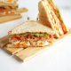
Club Sandwich 115s
Club sandwich is a sandwich with juicy parchment-fried chicken fillet, fragrant smoked bacon and fresh vegetables, generously seasoned with appetizing sauce.
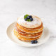
Banana Pancakes 115s
Banana pancakes according to this recipe are tender, with an airy middle, moderately sweet and, most importantly, very tasty.
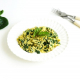
Spinach with egg 115s
Spinach with an egg in a pan can be cooked for a delicious breakfast. This is a delicate dish with a slight aroma of garlic, but there is no bright garlic flavor in it and no aftertaste either.
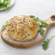
Cheese in puff pastry 115s
Cheese in puff pastry is one of the most beloved holiday snacks. This cheese can be cooked in different versions, with different spices.
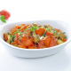
Pumpkin with mushrooms in the oven 115s
Pumpkin with mushrooms in the oven can be cooked as a full breakfast or as a side dish for meat or fish for lunch or dinner.
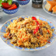
Pilaf 115s
A dish of meat, rice, onions, carrots and spices. There is pilaf at any holiday, even if its owner is of a different nationality. There are about 200 types of pilaf and a thousand recipes.
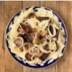
Besh barmak 115s
It means a dish common among the Kyrgyz, Kazakhs and some other peoples, "consisting of finely chopped pieces of meat and dough, poured with broth".
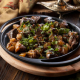
Kuurdak 115s
The traditional dish of Kyrgyz, Kazakhs, Uzbeks, Karachays and Turkmens is meat or offal and onions.Mantis 115s
A traditional dish, steamed, made from thin homemade dough and minced meat.
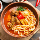
Lagman 115s
Central Asian spaghetti with meat, greens, spices and broth. Noodles are prepared by hand at home.
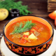
Soup 115s
This is a very fatty, rich soup, just like its traditional main component - lamb.
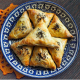
Samsa 115s
This is a baked dough, often layered, with various fillings, primarily meat. Samsa is one of the most favorite Kyrgyz dishes.
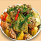
Dymdama 115s
This is not stewed vegetables in a pot. Cabbage, potatoes, carrots, eggplant, peppers, onions, celery and many others are among the vegetables used for cooking.
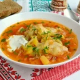
Borsch 115s
Borscht with young cabbage is a tasty, hearty first course to diversify your.
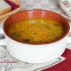
Lentils without meat 115s
Red lentil soup prepared without meat.
Soup with melted cheese and vermicelli 115s
The dish is prepared without meat, but it turns out hearty, appetizing and very tasty.
Buckwheat soup with meatballs 115s
Very light, fragrant and healthy first course. Meatballs can be made from any minced meat, and sprinkle with fresh herbs when serving.
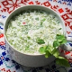
Okroshka on kefir 115s
Okroshka on kefir turns out to be very tasty, light and refreshing in spring. Try this dish and you will definitely like it